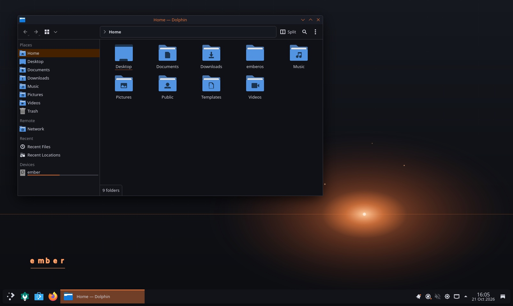

A personal Debian-based Linux: one machine for daily use, Apple mail and calendars, and a real pentest toolset.

Ember is my attempt at one machine instead of three: a daily driver that feels like Windows, pulls in iCloud mail, calendars and contacts, carries a proper security toolset, and looks like a workstation someone designed rather than skinned. It is a complete live-build configuration that produces a bootable, installable ISO, and it is now installed and running.
- Debian, not Kali. Kali is a poor daily driver. The cost is a toolset gap, which I have documented piece by piece along with how to fill each one
- KDE Plasma, not GNOME. The most customisable desktop, set up with Windows habits: a taskbar, a start menu on the Super key
- Evolution for iCloud. IMAP, CalDAV and CardDAV are more reliable there than the alternatives
- btrfs and snapper. A snapshot around every package transaction, so a broken hook of my own is one rollback away
- Calamares as the installer. The stock Debian installer would quietly install plain Debian from the ISO pool, without any of Ember's packages
Phase one runs as an arm64 virtual machine on my Mac. Phase two moves to x86 hardware, where Windows compatibility through Wine and GPU tools like hashcat make sense. The architecture is built around that move, and a preflight script checks every package name for the target architecture before a forty-minute build rather than failing at the end of one.
Built, installed and running in a VM on my Mac, with its own wallpaper, panel theme, menu categories and a dedicated security tools menu. Next is the move to real x86 hardware. The name is still a placeholder.